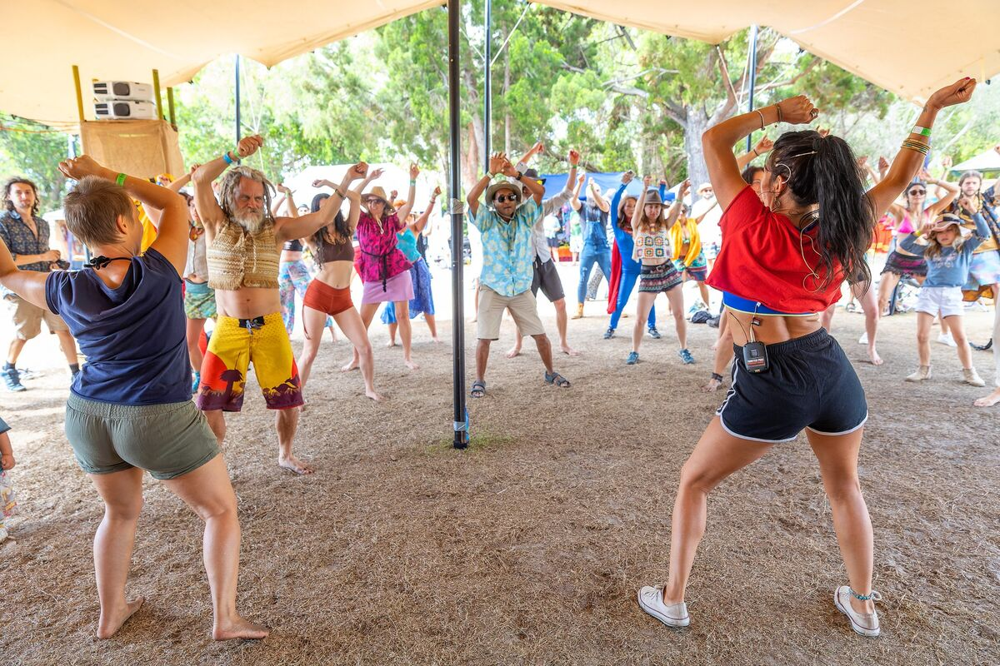

An ongoing free community dance event offering participatory dance and movement practices. The aim is to have fun, come together and connect through movement!

This event is suitable for anyone and everyone! We want to create a space that is friendly, inclusive and supportive. These events are designed for individuals who are seeking an activity to engage, connect and be social through a fun, physical and creative outlet.
Some classes can be run as a seated program, making them accessible to those with mobility issues too!
Contact Lisa to find out about upcoming Community Dance events.
Get in Touch